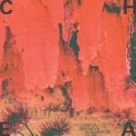
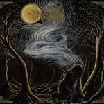
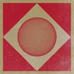
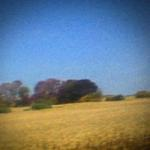

Music Reviews
-

Cheatahs Cheatahs
Debut album from London based guitar band peddling noisy shoegaze and 90s-style alt-rock. My Bloody Dinosaur, anyone?
David John Wood gets all nostalgic for his youth...ahhh -

Woods of Desolation As The Stars
Just when you thought we'd have a break from hearing about all this post-black metal broo-ha-ha, Woods of Desolation, a nearly decade-long act, push the narrative further by battling convention with convention.
Peter Quinton tried really hard not to mention Deafheaven but fails miserably... -
Guided By Voices Motivational Jumpsuit
Guided By Voices released three, yes three, albums in 2012 after their reformation. With only a single offering in 2013, Motivational Jumpsuit is well overdue, don't you think?
How can you not find something to like here, asks Graeme Marsh? -

Robin Thicke Album Collection
Five albums, eight years of music, his entire pre-Blurred Lines recorded output. Surely, somewhere amongst all this he can find a rhyme for "hug me".
Robin, it's Joe Rivers. I'm pregnant. I think it's yours... -

Sunn O))) & Ulver Terrestrials
Sunn O))) & Ulver have established themselves as two of the most interesting metal bands in recent memory on their own, but will their combined efforts result in heavy metal bliss or a cosmically cluttered mess?
Andrew Ciraulo pulls out his yoga mat (yes, he owns a yoga mat) and meditates to the droning sounds... -
Dog Bite Tranquilizers
Second album of shoegaze, chillwave and 80s electropop from former Washed Out keyboardist Phil Jones.
David John Wood sinks his teeth into it... -
Katy B Little Red
Every heartbreak is a reason to party for Katy B on Little Red. With that voice and those beats though, why not?
Luiza Lodder reviews... -

Sun Kil Moon Benji
Mark Kozelek’s sixth project under the Sun Kil Moon moniker is his most intimate work yet, thoroughly documenting definitive moments that marked his past and continue to haunt his present.
Juan Edgardo Rodríguez reviews... -

Be Forest Earthbeat
Fresh from the Italian Adriatic coast, Be Forest have self-produced their second record, and it's a natural evolution of the authentic, organic sound that won such acclaim 3 years ago. If 2011 debut Cold was winter, Earthbeat is spring, and it's a serene listen.
Carl Purvis reviews... -
Dum Dum Girls Too True
Too True is an album that only works very occasionally. The songs are there, the riffs are there, but the production is not. The guitar is consistently buried in the mix, wasting many good melodies and robbing the Dum Dum Girls of one of its greatest strengths.
Joe Marvilli delivers some harsh truths...